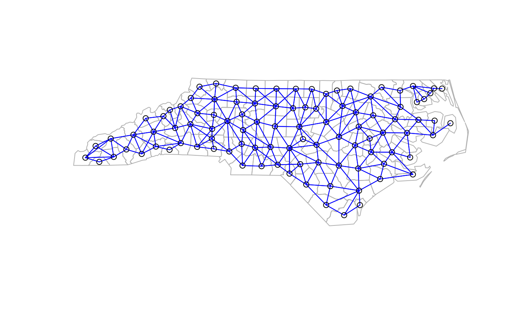

Permutation test for empirical Bayes index
EBImoran.mc.RdAn empirical Bayes index modification of Moran's I for testing for spatial autocorrelation in a rate, typically the number of observed cases in a population at risk. The index value is tested by using nsim random permutations of the index for the given spatial weighting scheme, to establish the rank of the observed statistic in relation to the nsim simulated values.
EBImoran.mc(n, x, listw, nsim, zero.policy = NULL, alternative = "greater", spChk=NULL, return_boot=FALSE, subtract_mean_in_numerator=TRUE)
Arguments
| n | a numeric vector of counts of cases the same length as the neighbours list in listw |
|---|---|
| x | a numeric vector of populations at risk the same length as the neighbours list in listw |
| listw | a |
| nsim | number of permutations |
| zero.policy | default NULL, use global option value; if TRUE assign zero to the lagged value of zones without neighbours, if FALSE assign NA |
| alternative | a character string specifying the alternative hypothesis, must be one of "greater" (default), or "less" |
| spChk | should the data vector names be checked against the spatial objects for identity integrity, TRUE, or FALSE, default NULL to use |
| return_boot | return an object of class |
| subtract_mean_in_numerator | default TRUE, if TRUE subtract mean of z in numerator of EBI equation on p. 2157 in reference (consulted with Renato Assunção 2016-02-19); until February 2016 the default was FALSE agreeing with the printed paper. |
Details
The statistic used is (m is the number of observations): $$EBI = \frac{m}{\sum_{i=1}^{m}\sum_{j=1}^{m}w_{ij}} \frac{\sum_{i=1}^{m}\sum_{j=1}^{m}w_{ij}z_i z_j}{\sum_{i=1}^{m}(z_i - \bar{z})^2} $$ where: $$z_i = \frac{p_i - b}{\sqrt{v_i}}$$ and: $$p_i = n_i / x_i$$ $$v_i = a + (b / x_i)$$ $$b = \sum_{i=1}^{m} n_i / \sum_{i=1}^{m} x_i $$ $$a = s^2 - b / (\sum_{i=1}^{m} x_i / m)$$ $$s^2 = \sum_{i=1}^{m} x_i (p_i - b)^2 / \sum_{i=1}^{m} x_i $$
Value
A list with class htest and mc.sim containing the
following components:
the value of the observed Moran's I.
the rank of the observed Moran's I.
the pseudo p-value of the test.
a character string describing the alternative hypothesis.
a character string giving the method used.
a character string giving the name(s) of the data, and the number of simulations.
nsim simulated values of statistic, final value is observed statistic
a numerical vector of Empirical Bayes indices as z above
References
Assunção RM, Reis EA 1999 A new proposal to adjust Moran's I for population density. Statistics in Medicine 18, pp. 2147--2162; Bivand RS, Wong DWS 2018 Comparing implementations of global and local indicators of spatial association. TEST, 27(3), 716--748 https://doi.org/10.1007/s11749-018-0599-x
See also
Examples
if (require(rgdal, quietly=TRUE)) { example(nc.sids, package="spData") EBImoran.mc(nc.sids$SID74, nc.sids$BIR74, nb2listw(ncCC89_nb, style="B", zero.policy=TRUE), nsim=999, zero.policy=TRUE) sids.p <- nc.sids$SID74 / nc.sids$BIR74 moran.mc(sids.p, nb2listw(ncCC89_nb, style="B", zero.policy=TRUE), nsim=999, zero.policy=TRUE) }#> Warning: package ‘rgdal’ was built under R version 3.4.4#> #> #> #> #> #> #> #>#> #> nc.sds> if (requireNamespace("rgdal", quietly = TRUE)) { #> nc.sds+ library(rgdal) #> nc.sds+ if (requireNamespace("spdep", quietly = TRUE)) { #> nc.sds+ library(spdep) #> nc.sds+ nc.sids <- readOGR(system.file("shapes/sids.shp", package="spData")[1]) #> nc.sds+ proj4string(nc.sids) <- CRS("+proj=longlat +ellps=clrk66") #> nc.sds+ row.names(nc.sids) <- as.character(nc.sids$FIPS) #> nc.sds+ rn <- row.names(nc.sids) #> nc.sds+ ncCC89_nb <- read.gal(system.file("weights/ncCC89.gal", package="spData")[1], #> nc.sds+ region.id=rn) #> nc.sds+ ncCR85_nb <- read.gal(system.file("weights/ncCR85.gal", package="spData")[1], #> nc.sds+ region.id=rn) #> nc.sds+ #> nc.sds+ plot(nc.sids, border="grey") #> nc.sds+ plot(ncCR85_nb, coordinates(nc.sids), add=TRUE, col="blue") #> nc.sds+ plot(nc.sids, border="grey") #> nc.sds+ plot(ncCC89_nb, coordinates(nc.sids), add=TRUE, col="blue") #> nc.sds+ } #> nc.sds+ } #> OGR data source with driver: ESRI Shapefile #> Source: "/Library/Frameworks/R.framework/Versions/3.4/Resources/library/spData/shapes/sids.shp", layer: "sids" #> with 100 features #> It has 22 fields#>#> #> Monte-Carlo simulation of Moran I #> #> data: sids.p #> weights: nb2listw(ncCC89_nb, style = "B", zero.policy = TRUE) #> number of simulations + 1: 1000 #> #> statistic = 0.20904, observed rank = 999, p-value = 0.001 #> alternative hypothesis: greater #>